1. 로그인 인증에 있어, 먼저 유저를 검색하기 위해 DAO에 Select를 만들어준다
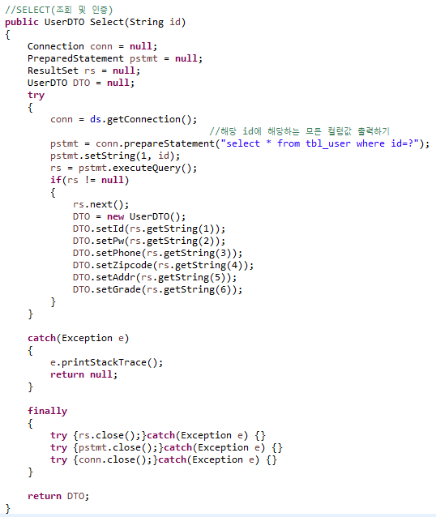
2. 인증에 있어서 확인할 값을 받을 AuthDTO를 만들고
Getter Setter, toString(), 디폴트생성자도 같이 정의해준다
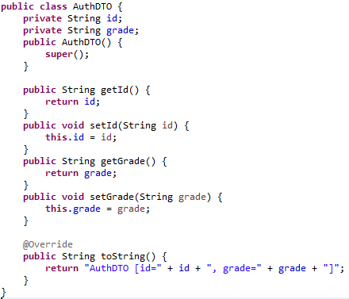
3. 로그인을 처리할 AuthService를 만들어준다.
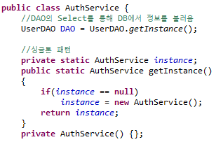
4. 로그인창에서 파라미터로 아이디와 비밀번호를 받아 일치여부를 확인하는 메서드 작성
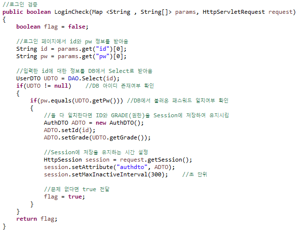
5. 로그아웃 구현
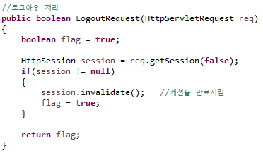
6. FrontController에서 Login , Logout에 대해 컨트롤러 만들고 URI 연결시키기
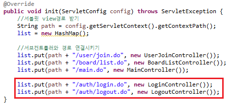
7. LoginController 작업하기 , 유효성검사(공백체크) 만들기
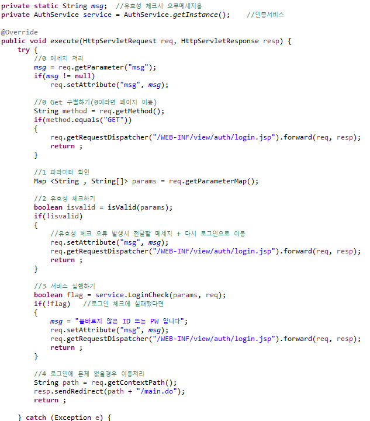
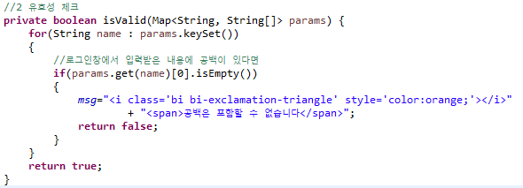
8. LogoutController 작업하기
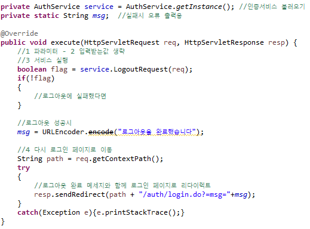
9. 아이디와 비밀번호를 입력받을 로그인페이지 만들기
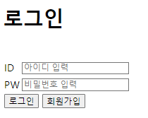
10. isValid함수로 유효성 검증을 하고 form을 login.do와 연결시킨다
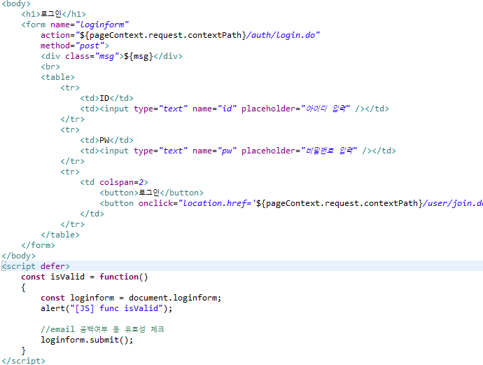
11. 로그아웃 체크를 위해 로그인 완료 후 이동되는 main.jsp에 로그아웃을 만들어준다
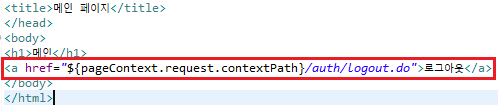
12. 로그인과 로그아웃 테스트를 해본다
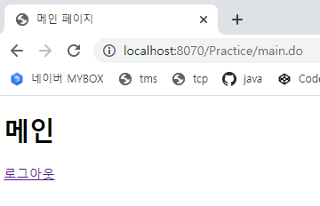
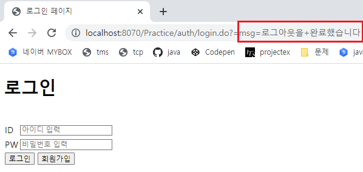